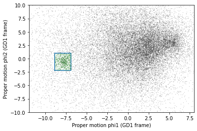
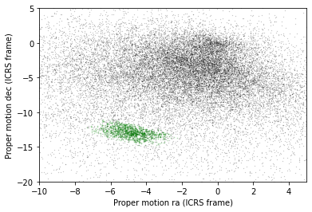
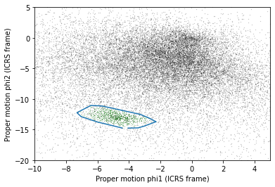
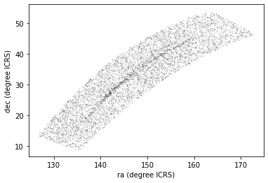
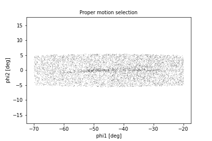

Transform and Select
Last updated on 2022-05-18 | Edit this page
Overview
Questions
- When should we use the database server for computation?
- When should we download the data from the database server and compute locally?
Objectives
- Transform proper motions from one frame to another.
- Compute the convex hull of a set of points.
- Write an ADQL query that selects based on proper motion.
In the previous episode, we identified stars with the proper motion we expect for GD-1.
Now we will do the same selection in an ADQL query, which will make it possible to work with a larger region of the sky and still download less data.
Outline
Using data from the previous episode, we will identify the values of proper motion for stars likely to be in GD-1.
Then we will compose an ADQL query that selects stars based on proper motion, so we can download only the data we need.
That will make it possible to search a bigger region of the sky in a single query.
Starting from this episode
If you are starting a new notebook for this episode, expand this section for information you will need to get started.
Previously, we ran a query on the Gaia server, downloaded data for roughly 140,000 stars, and saved the data in a FITS file. We then selected just the stars with the same proper motion as GD-1 and saved the results to an HDF5 file. We will use that data for this episode. Whether you are working from a new notebook or coming back from a checkpoint, reloading the data will save you from having to run the query again.
If you are starting this episode here or starting this episode in a new notebook, you will need to run the following lines of code.
This imports previously imported functions:
PYTHON
import astropy.units as u
from astropy.coordinates import SkyCoord
from astroquery.gaia import Gaia
from gala.coordinates import GD1Koposov10, GD1, reflex_correct
import matplotlib.pyplot as plt
import pandas as pd
from episode_functions import *The following code loads in the data (instructions for downloading data can be found in the setup instructions). You may need to add a the path to the filename variable below (e.g. filename = 'student_download/backup-data/gd1_data.hdf')
PYTHON
filename = 'gd1_data.hdf'
centerline_df = pd.read_hdf(filename, 'centerline_df')
selected_df = pd.read_hdf(filename, 'selected_df')This defines previously defined quantities:
PYTHON
pm1_min = -8.9
pm1_max = -6.9
pm2_min = -2.2
pm2_max = 1.0
pm1_rect, pm2_rect = make_rectangle(
pm1_min, pm1_max, pm2_min, pm2_max)
gd1_frame = GD1Koposov10()Selection by proper motion
Let us review how we got to this point.
We made an ADQL query to the Gaia server to get data for stars in the vicinity of a small part of GD-1.
We transformed the coordinates to the GD-1 frame (
GD1Koposov10) so we could select stars along the centerline of GD-1.We plotted the proper motion of stars along the centerline of GD-1 to identify the bounds of an anomalous overdense region associated with the proper motion of stars in GD-1.
We made a mask that selects stars whose proper motion is in this overdense region and which are therefore likely to be part of the GD-1 stream.
At this point we have downloaded data for a relatively large number of stars (more than 100,000) and selected a relatively small number (around 1000).
It would be more efficient to use ADQL to select only the stars we need. That would also make it possible to download data covering a larger region of the sky.
However, the selection we did was based on proper motion in the GD-1 frame. In order to do the same selection on the Gaia catalog in ADQL, we have to work with proper motions in the ICRS frame as this is the frame that the Gaia catalog uses.
First, we will verify that our proper motion selection was correct, starting with the plot_proper_motion function that we defined in episode 3. The following figure shows:
Proper motion for the stars we selected along the center line of GD-1,
The rectangle we selected, and
The stars inside the rectangle highlighted in green.
PYTHON
plot_proper_motion(centerline_df)
plt.plot(pm1_rect, pm2_rect)
x = selected_df['pm_phi1']
y = selected_df['pm_phi2']
plt.plot(x, y, 'gx', markersize=0.3, alpha=0.3);OUTPUT
<Figure size 432x288 with 1 Axes>
Now we will make the same plot using proper motions in the ICRS frame, which are stored in columns named pmra and pmdec.
PYTHON
x = centerline_df['pmra']
y = centerline_df['pmdec']
plt.plot(x, y, 'ko', markersize=0.3, alpha=0.3)
x = selected_df['pmra']
y = selected_df['pmdec']
plt.plot(x, y, 'gx', markersize=1, alpha=0.3)
plt.xlabel('Proper motion ra (ICRS frame)')
plt.ylabel('Proper motion dec (ICRS frame)')
plt.xlim([-10, 5])
plt.ylim([-20, 5]);OUTPUT
<Figure size 432x288 with 1 Axes>
The proper motions of the selected stars are more spread out in this frame, which is why it was preferable to do the selection in the GD-1 frame.
But now we can define a polygon that encloses the proper motions of these stars in ICRS, and use that polygon as a selection criterion in an ADQL query.
Convex Hull
SciPy provides a function that computes the convex hull of a set of points, which is the smallest convex polygon that contains all of the points.
To use this function, we will select the columns pmra and pmdec and convert them to a NumPy array.
PYTHON
import numpy as np
points = selected_df[['pmra','pmdec']].to_numpy()
points.shapeOUTPUT
(1049, 2)Older versions of Pandas
If you are using an older version of Pandas, you might not have to_numpy(). You can use values instead, like this:
PYTHON
points = selected_df[['pmra','pmdec']].valuesWe will pass the points to ConvexHull, which returns an object that contains the results.
PYTHON
from scipy.spatial import ConvexHull
hull = ConvexHull(points)
hullOUTPUT
<scipy.spatial.qhull.ConvexHull at 0x7ff6207866a0>hull.vertices contains the indices of the points that fall on the perimeter of the hull.
PYTHON
hull.verticesOUTPUT
array([ 692, 873, 141, 303, 42, 622, 45, 83, 127, 182, 1006,
971, 967, 1001, 969, 940], dtype=int32)We can use them as an index into the original array to select the corresponding ICRS frame proper motion data points.
PYTHON
pm_vertices = points[hull.vertices]
pm_verticesOUTPUT
array([[ -4.05037121, -14.75623261],
[ -3.41981085, -14.72365546],
[ -3.03521988, -14.44357135],
[ -2.26847919, -13.7140236 ],
[ -2.61172203, -13.24797471],
[ -2.73471401, -13.09054471],
[ -3.19923146, -12.5942653 ],
[ -3.34082546, -12.47611926],
[ -5.67489413, -11.16083338],
[ -5.95159272, -11.10547884],
[ -6.42394023, -11.05981295],
[Output truncated]To plot the resulting polygon, we have to pull out the x and y coordinates.
PYTHON
pmra_poly, pmdec_poly = np.transpose(pm_vertices)Note
This use of transpose is a useful NumPy idiom to turn data that is listed as rows of (x,y) pairs into an array of x values and an array of y values. Because pm_vertices has two columns, its matrix transpose has two rows, which are assigned to the two variables pmra_poly and pmdec_poly.
The following figure shows proper motion in ICRS again, along with the convex hull we just computed.
PYTHON
x = centerline_df['pmra']
y = centerline_df['pmdec']
plt.plot(x, y, 'ko', markersize=0.3, alpha=0.3)
x = selected_df['pmra']
y = selected_df['pmdec']
plt.plot(x, y, 'gx', markersize=0.3, alpha=0.3)
plt.plot(pmra_poly, pmdec_poly)
plt.xlabel('Proper motion phi1 (ICRS frame)')
plt.ylabel('Proper motion phi2 (ICRS frame)')
plt.xlim([-10, 5])
plt.ylim([-20, 5]);OUTPUT
<Figure size 432x288 with 1 Axes>
So pm_vertices represents the polygon we want to select. The next step is to use this polygon as part of an ADQL query.
Assembling the query
In episode 2 we used the following query to select stars in a polygonal region around a small part of GD-1 with a few filters on color and distance (parallax):
PYTHON
candidate_coord_query_base = """SELECT
{columns}
FROM gaiadr2.gaia_source
WHERE parallax < 1
AND bp_rp BETWEEN -0.75 AND 2
AND 1 = CONTAINS(POINT(ra, dec),
POLYGON({sky_point_list}))
"""In this episode we will make two changes:
We will select stars with coordinates in a larger region to include more of GD-1.
We will add another clause to select stars whose proper motion is in the polygon we just computed,
pm_vertices.
The fact that we remove most contaminating stars with the proper motion filter is what allows us to expand our query to include most of GD-1 without returning too many results. As we did in episode 2, we will define the physical region we want to select in the GD-1 frame and transform it to the ICRS frame to query the Gaia catalog which is in the ICRS frame.
Here are the coordinates of the larger rectangle in the GD-1 frame.
PYTHON
phi1_min = -70 * u.degree
phi1_max = -20 * u.degree
phi2_min = -5 * u.degree
phi2_max = 5 * u.degreeWe selected these bounds by trial and error, defining the largest region we can process in a single query.
PYTHON
phi1_rect, phi2_rect = make_rectangle(
phi1_min, phi1_max, phi2_min, phi2_max)Here is how we transform it to ICRS, as we saw in episode 2.
PYTHON
corners = SkyCoord(phi1=phi1_rect,
phi2=phi2_rect,
frame=gd1_frame)
corners_icrs = corners.transform_to('icrs')To use corners_icrs as part of an ADQL query, we have to convert it to a string. Fortunately, we wrote a function, skycoord_to_string to do this in episode 2 which we will call now.
PYTHON
sky_point_list = skycoord_to_string(corners_icrs)
sky_point_listOUTPUT
'135.306, 8.39862, 126.51, 13.4449, 163.017, 54.2424, 172.933, 46.4726, 135.306, 8.39862'Here are the columns we want to select.
PYTHON
columns = 'source_id, ra, dec, pmra, pmdec'Now we have everything we need to assemble the query, but DO NOT try to run this query. Because it selects a larger region, there are too many stars to handle in a single query. Until we select by proper motion, that is.
PYTHON
candidate_coord_query = candidate_coord_query_base.format(columns=columns,
sky_point_list=sky_point_list)
print(candidate_coord_query)OUTPUT
SELECT
source_id, ra, dec, pmra, pmdec
FROM gaiadr2.gaia_source
WHERE parallax < 1
AND bp_rp BETWEEN -0.75 AND 2
AND 1 = CONTAINS(POINT(ra, dec),
POLYGON(135.306, 8.39862, 126.51, 13.4449, 163.017, 54.2424, 172.933, 46.4726, 135.306, 8.39862))Selecting proper motion
Now we are ready to add a WHERE clause to select stars whose proper motion falls in the polygon defined by pm_vertices.
To use pm_vertices as part of an ADQL query, we have to convert it to a string. Using flatten to convert from a 2D array to a 1D array and array2string to convert the result from an array to a string, we can almost get the format we need.
PYTHON
s = np.array2string(pm_vertices.flatten(),
max_line_width=1000,
separator=',')
sOUTPUT
'[ -4.05037121,-14.75623261, -3.41981085,-14.72365546, -3.03521988,-14.44357135, -2.26847919,-13.7140236 , -2.61172203,-13.24797471, -2.73471401,-13.09054471, -3.19923146,-12.5942653 , -3.34082546,-12.47611926, -5.67489413,-11.16083338, -5.95159272,-11.10547884, -6.42394023,-11.05981295, -7.09631023,-11.95187806, -7.30641519,-12.24559977, -7.04016696,-12.88580702, -6.00347705,-13.75912098, -4.42442296,-14.74641176]'But we need to remove the brackets:
PYTHON
pm_point_list = s.strip('[]')
pm_point_listOUTPUT
' -4.05037121,-14.75623261, -3.41981085,-14.72365546, -3.03521988,-14.44357135, -2.26847919,-13.7140236 , -2.61172203,-13.24797471, -2.73471401,-13.09054471, -3.19923146,-12.5942653 , -3.34082546,-12.47611926, -5.67489413,-11.16083338, -5.95159272,-11.10547884, -6.42394023,-11.05981295, -7.09631023,-11.95187806, -7.30641519,-12.24559977, -7.04016696,-12.88580702, -6.00347705,-13.75912098, -4.42442296,-14.74641176'Exercise (10 minutes)
Define candidate_coord_pm_query_base, starting with candidate_coord_query_base and adding a new clause to select stars whose coordinates of proper motion, pmra and pmdec, fall within the polygon defined by pm_point_list.
PYTHON
candidate_coord_pm_query_base = """SELECT
{columns}
FROM gaiadr2.gaia_source
WHERE parallax < 1
AND bp_rp BETWEEN -0.75 AND 2
AND 1 = CONTAINS(POINT(ra, dec),
POLYGON({sky_point_list}))
AND 1 = CONTAINS(POINT(pmra, pmdec),
POLYGON({pm_point_list}))
"""Exercise (5 minutes)
Use format to format candidate_coord_pm_query_base and define candidate_coord_pm_query, filling in the values of columns, sky_point_list, and pm_point_list.
PYTHON
candidate_coord_pm_query = candidate_coord_pm_query_base.format(columns=columns,
sky_point_list=sky_point_list,
pm_point_list=pm_point_list)
print(candidate_coord_pm_query)ADQL POLYGON and Negative Signs
We recently discovered that the original use of POLYGON for proper motion is outside the scope of its intended use for coordinates only. Recent changes that were made to ADQL to enforce this now result in an error when negative values are passed into the first argument. As a work around, we will remove the negative sign from our input list and instead pass it to the POINT argument. This is only possible because all pmra and pmdec values are negative. The two work arounds below modify the last two exercise solutions to implement this quick fix. We are working on finding a more permanent and generalizable solution.
PYTHON
candidate_coord_pm_query_base = """SELECT
{columns}
FROM gaiadr2.gaia_source
WHERE parallax < 1
AND bp_rp BETWEEN -0.75 AND 2
AND 1 = CONTAINS(POINT(ra, dec),
POLYGON({sky_point_list}))
AND 1 = CONTAINS(POINT(-1*pmra, -1*pmdec),
POLYGON({pm_point_list}))
"""Challenge
PYTHON
candidate_coord_pm_query = candidate_coord_pm_query_base.format(columns=columns,
sky_point_list=sky_point_list,
pm_point_list=pm_point_list.replace('-', ''))
print(candidate_coord_pm_query)Now we can run the query like this:
PYTHON
candidate_coord_pm_job = Gaia.launch_job_async(candidate_coord_pm_query)
print(candidate_coord_pm_job)OUTPUT
INFO: Query finished. [astroquery.utils.tap.core]
<Table length=7345>
name dtype unit description
--------- ------- -------- ------------------------------------------------------------------
source_id int64 Unique source identifier (unique within a particular Data Release)
ra float64 deg Right ascension
dec float64 deg Declination
pmra float64 mas / yr Proper motion in right ascension direction
pmdec float64 mas / yr Proper motion in declination direction
Jobid: 1616771462206O
Phase: COMPLETED
[Output truncated]And get the results.
PYTHON
candidate_gaia_table = candidate_coord_pm_job.get_results()
len(candidate_gaia_table)OUTPUT
7345We call the results candidate_gaia_table because it contains information from the Gaia table for stars that are good candidates for GD-1.
Both sky_point_list and pm_point_list are a set of selection criteria that we derived from data downloaded from the Gaia Database. To make sure we can repeat our analysis at a later date we should save both lists to a file. There are several ways we could do that, but since we are already storing data in an HDF5 file, we will do the same with these variables.
To save them to an HDF5 file we first need to put them in a Pandas object. We have seen how to create a Series from a column in a DataFrame. Now we will build a Series from scratch. We do not need the full DataFrame format with multiple rows and columns because we are only storing two strings (sky_point_list and pm_point_list). We can store each string as a row in the Series and save it. One aspect that is nice about Series is that we can label each row. To do this we need an object that can define both the name of each row and the data to go in that row. We can use a Python Dictionary for this, defining the row names with the dictionary keys and the row data with the dictionary values.
PYTHON
d = dict(sky_point_list=sky_point_list, pm_point_list=pm_point_list)
dOUTPUT
{'sky_point_list': '135.306, 8.39862, 126.51, 13.4449, 163.017, 54.2424, 172.933, 46.4726, 135.306, 8.39862',
'pm_point_list': ' -4.05037121,-14.75623261, -3.41981085,-14.72365546, -3.03521988,-14.44357135, -2.26847919,-13.7140236 , -2.61172203,-13.24797471, -2.73471401,-13.09054471, -3.19923146,-12.5942653 , -3.34082546,-12.47611926, -5.67489413,-11.16083338, -5.95159272,-11.10547884, -6.42394023,-11.05981295, -7.09631023,-11.95187806, -7.30641519,-12.24559977, -7.04016696,-12.88580702, -6.00347705,-13.75912098, -4.42442296,-14.74641176'}And use this Dictionary to initialize a Series.
PYTHON
point_series = pd.Series(d)
point_seriesOUTPUT
sky_point_list 135.306, 8.39862, 126.51, 13.4449, 163.017, 54...
pm_point_list -4.05037121,-14.75623261, -3.41981085,-14.723...
dtype: objectNow we can save our Series using to_hdf().
PYTHON
filename = 'gd1_data.hdf'
point_series.to_hdf(filename, 'point_series')Plotting one more time
Now we can examine the results:
PYTHON
x = candidate_gaia_table['ra']
y = candidate_gaia_table['dec']
plt.plot(x, y, 'ko', markersize=0.3, alpha=0.3)
plt.xlabel('ra (degree ICRS)')
plt.ylabel('dec (degree ICRS)');OUTPUT
<Figure size 432x288 with 1 Axes>
This plot shows why it was useful to transform these coordinates to the GD-1 frame. In ICRS, it is more difficult to identity the stars near the centerline of GD-1.
We can use our make_dataframe function from episode 3 to transform the results back to the GD-1 frame. In addition to doing the coordinate transformation and reflex correction for us, this function also compiles everything into a single object (a DataFrame) to make it easier to use. Note that because we put this code into a function, we can do all of this with a single line of code!
PYTHON
candidate_gaia_df = make_dataframe(candidate_gaia_table)We can check the results using the plot_pm_selection function we wrote in episode 3.
PYTHON
plot_pm_selection(candidate_gaia_df)OUTPUT
<Figure size 432x288 with 1 Axes>
We are starting to see GD-1 more clearly. We can compare this figure with this panel from Figure 1 from the original paper:

This panel shows stars selected based on proper motion only, so it is comparable to our figure (although notice that the original figure covers a wider region).
In the next episode, we will use photometry data from Pan-STARRS to do a second round of filtering, and see if we can replicate this panel.

Later we will learn how to add annotations like the ones in the figure and customize the style of the figure to present the results clearly and compellingly.
Summary
In the previous episode we downloaded data for a large number of stars and then selected a small fraction of them based on proper motion.
In this episode, we improved this process by writing a more complex query that uses the database to select stars based on proper motion. This process requires more computation on the Gaia server, but then we are able to either:
Search the same region and download less data, or
Search a larger region while still downloading a manageable amount of data.
In the next episode, we will learn about the database JOIN operation, which we will use in later episodes to join our Gaia data with photometry data from Pan-STARRS.
Keypoints
- When possible, ‘move the computation to the data’; that is, do as much of the work as possible on the database server before downloading the data.